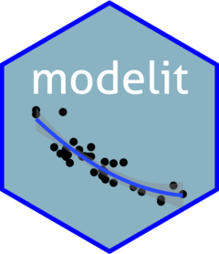
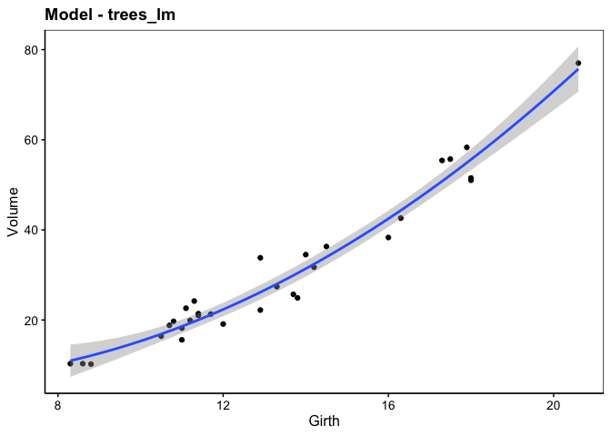
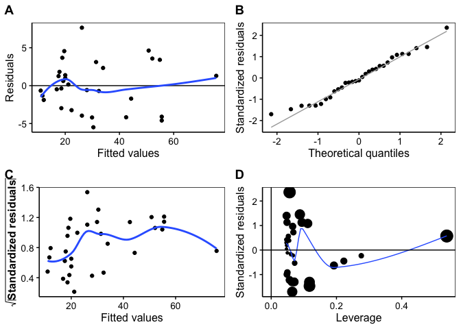

Statistical Models for ‘SciViews::R’  ================
The {modelit} package adds the statistical models to the SciViews::R dialect. It uses both the fun$type(data = ...., formula) approach and the enhanced formula allowing to specify arguments with %arg=% directly inside the formula. It also takes the variable labels into account in the outputs.
The {modelit} package provides methods (lm, glm; nls objects) for the chart() function in the {chart} package and the tabularise() function in the {tabularise} package.
Installation
{modelit} is not available from CRAN yet. You should install it from the SciViews R-Universe. {chart} is an alternate formula interface to {ggplot2}. {tabularise} produces publication-ready (rich-formatted) tabular output. The {equatags} and {equatiomatic} packages are optional, but they are useful to display equations, both inline in R Markdown/Quarto documents and in {tabularise} tables. {data.io} is useful too because it manages labels and units that {chart} uses. To install these six packages and their dependencies, run the following command in R:
install.packages(c('modelit', 'chart', 'tabularise', 'equatags', 'equatiomatic', 'data.io'),
repos = c('https://sciviews.r-universe.dev', 'https://cloud.r-project.org'))You can also install the latest development version of {modelit}. Make sure you have the {remotes} R package installed:
# install.packages("remotes")
remotes::install_github("SciViews/modelit")Short example
The trees datasets present diameter, height and volume for Black Cherry Trees (Prunus serotina, Ehrh., 1788)
data('trees', package = 'datasets')We perform a polynomial regression of the volume of timber as a function of the girth of the trees.
trees_lm <- lm(Volume ~ Girth + I(Girth^2), data = trees)
summary(trees_lm)
#>
#> Call:
#> lm(formula = Volume ~ Girth + I(Girth^2), data = trees)
#>
#> Residuals:
#> Min 1Q Median 3Q Max
#> -5.4889 -2.4293 -0.3718 2.0764 7.6447
#>
#> Coefficients:
#> Estimate Std. Error t value Pr(>|t|)
#> (Intercept) 10.78627 11.22282 0.961 0.344728
#> Girth -2.09214 1.64734 -1.270 0.214534
#> I(Girth^2) 0.25454 0.05817 4.376 0.000152 ***
#> ---
#> Signif. codes: 0 '***' 0.001 '**' 0.01 '*' 0.05 '.' 0.1 ' ' 1
#>
#> Residual standard error: 3.335 on 28 degrees of freedom
#> Multiple R-squared: 0.9616, Adjusted R-squared: 0.9588
#> F-statistic: 350.5 on 2 and 28 DF, p-value: < 2.2e-16The model can be viewed using chart():
chart(trees_lm)
Residual analysis plots can also be carried out with chart().
chart$residuals(trees_lm)
For further examples, please, refer to the help pages at https://www.sciviews.org/modelit/.
Code of Conduct
Please note that the {modelit} package is released with a Contributor Code of Conduct. By contributing to this project, you agree to abide by its terms.